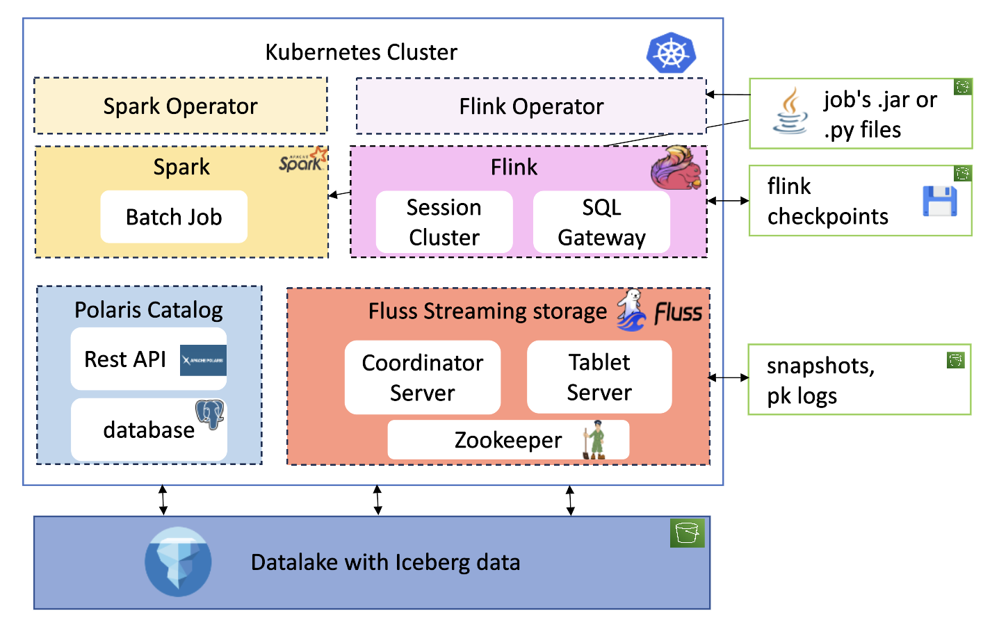
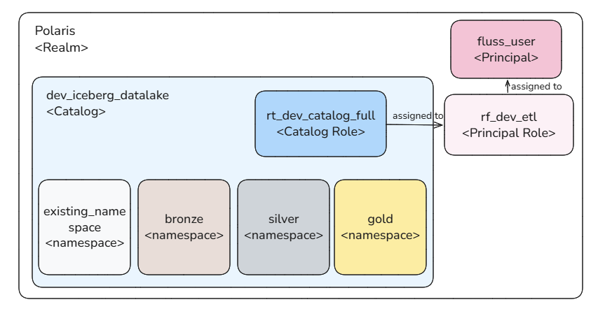
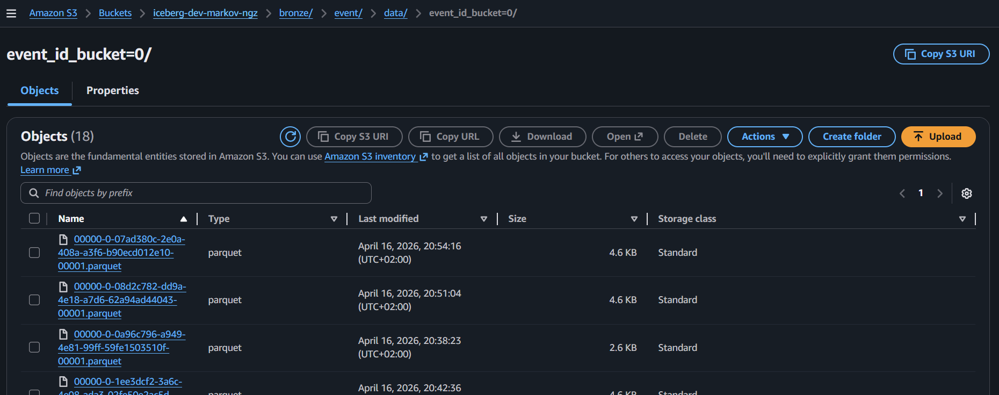

Kubernetes Deployment
Two deployment methods are available:
- Kubernetes (production)
- Docker (for local testing and configuration validation)
This guide focuses on Kubernetes deployment, as it best illustrates key challenges:
- Continuous deployment
- Logs & persistence
- Security & role management
- Monitoring and performance
Even if those are aspects are not adressed in this project, the context of kubernetes already expose those issues and which are necessary to go past a poc to production.
Resource Overview
The deployment includes the following resources and integrates with remote storage (S3):

Namespaces
Resources are organized into the following namespaces:
- Applicative namespaces: polaris , fluss , flink ,spark
- Technical namespaces : technical-spark-operator , technical-flink-operator
Operators
Flink
The flink-kubernetes-operator is used for Flink deployments. The Helm chart is customized to pull .jar files from an S3 bucket, featuring:
- A custom operator pod image with the S3 filesystem Hadoop plugin
- AWS environment variables for S3 authentication
This allows loading JARs for FlinkDeployment or FlinkSessionJob using the URI:
Spark
Spark is deployed using a custom Helm chart based on the spark-on-k8s-operator.
No custom configurations were made at the helm chart level : different from flink's operator , to be able to download the .py or .jar job file from a s3 bucket, it is not the operator's controller or webhook image which is modified but the deployment's.
Hence the base spark image used has aws sdk baked into it and authentication is made with classic secrets as secrets.
Polaris
The Polaris Helm chart is customized with:
- AWS secrets for S3 access
- JDBC persistence for PostgreSQL integration
A PostgreSQL database is instantiated with default credentials.
OAuth2 is used for authentication, with the following resources created:
- Catalog
- Namespace
- Catalog role
- Principal role
- Principal

Client applications use principal credentials to obtain a token for catalog interaction.
Fluss
The Fluss Helm chart is customized with:
- A custom image including S3 dependencies
- AWS secrets for KV data persistence (independent of Iceberg)
- REST Iceberg configuration with principal credentials
Since Raft is not available, ZooKeeper is deployed as the cluster manager, with a PVC for state persistence.
Flink deployment
Flink is deployed in session mode to reduce workload on the local cluster.
Session jobs are submitted via:
- Kubernetes CRDs:
FlinkSessionJobandFlinkDeployment - SQL Gateway REST API: using a tool to execute SQL scripts
SQL catalogs are mounted to the flink-main-container via a ConfigMap and configured as a file catalog store.
The SQL Gateway is deployed separately and submits requests to the main cluster.
For further reading, see this article
Spark deployment
AWS Infrastructure: Storage Requirements
This project requires S3 remote storage for the following components:
- Iceberg table data
- Flink checkpoints
- Flink JAR files
- Fluss PK table snapshots and tiered log segments
The infrastructure is provisioned using Terraform.
